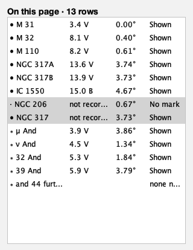

On This Page · Application UI
The page's own inventory

- Region
- M 31, Andromeda
- Field
- 8°
- Ink
- Application UI, not chart output.
- Source
- docs/studies/on-this-page/sidebar-released.png
- Produced
- Widget-rendered panel inspection image, reviewed by eye; held unchanged by make evidence-contracts. v1.7.0 tree (8820a6d).